Image Segmentation
Image segmentation review
- A review of segmentation at qure.ai
Rich feature hierarchies for accurate object detection and semantic segmentation
Ross Girshick, Jeff Donahue, Trevor Darrell, Jitendra Malik : Oct 2014
Source
- Introduces R-CNN, Regions with CNN. Bridging the gap between image classification and object detection. 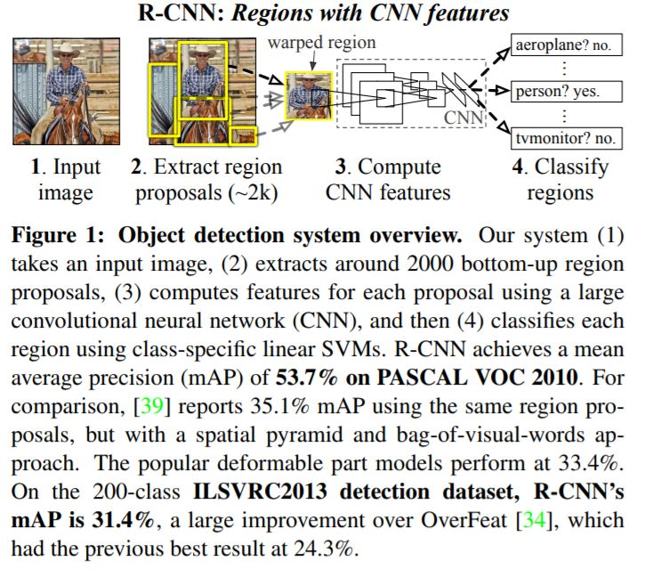
- Object detection with R-CNN
- Region proposals. Uses selective search.
- Propose a bunch of boxes in the image and see if any of them actually correspond to an object.
- Feature extraction. Extracts a 4096 dimensional feature vector from each region proposal by propagating a mean subtracted 227 X 227 RGB image through five conv layers and two fully connected layers.
- These test time detections are highly parallel and the costs can amortized costs are hence low.
- Training is done by supervised pre-training followed by domain-specific fine-tuning
- Finally, R-CNN runs a simpler linear regression on the region proposal to generate tighter bounding box coordinates to get our final results. 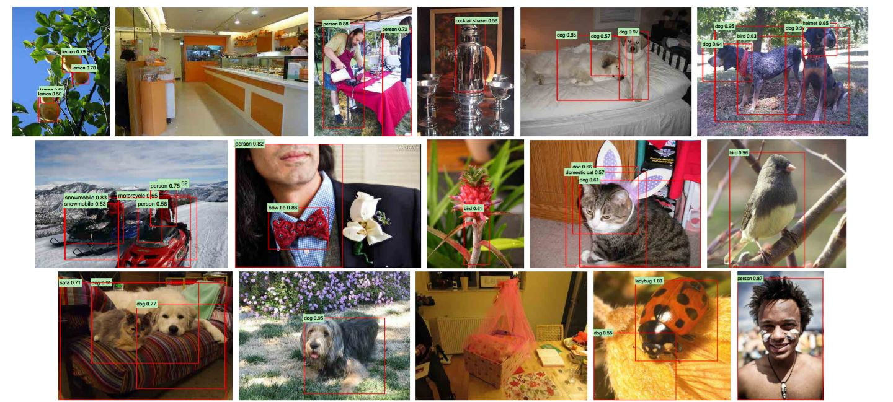
Fast R-CNN
Ross Girshick : Sep 2015
Source
Implementation
- 9 X faster at training time. 213 X faster at test time.
- Streamline the previous process by jointly learning to classify object proposals and refine their spatial locations.
- Advantages:
- Higher detection quality than R-CNN and SPPnet.
- Training is single stage, using a multi-task loss.
- Training can update all network layers.
- No disk storage is required for feature caching.
- Architecture 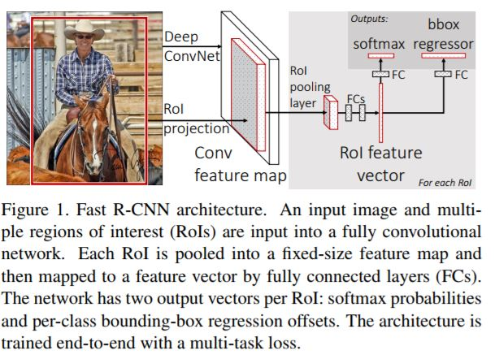
- The RoI pooling layer : Run the CNN just once per image and then find a way to share that computation across the ~2000 proposals. 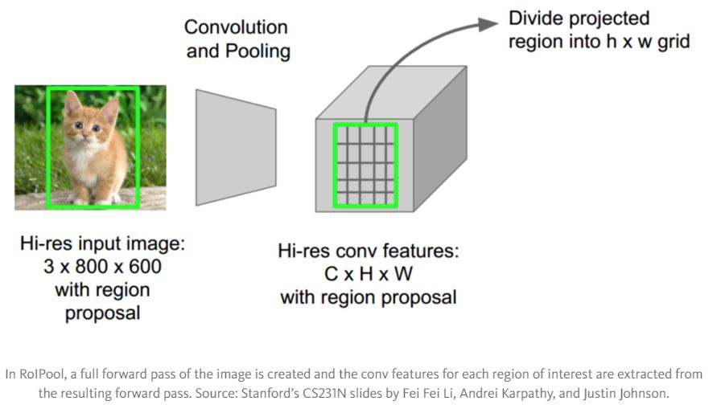
- Initializing from pre-trained networks. with some modifications.
- Fine tuning for detection.
- Hierarchical sampling.
- Multi-task loss. Classification loss + boounding box regression offsets.
- Mini-batch Sampling.
- Back-propagation through RoI pooling layers.
- SGD hyperparameters.
Faster R-CNN: Towards Real-Time Object Detection with Region Proposal Networks
Shaoqing Ren, Kaiming He, Ross Girshick, Jian Sun : Jan 2016
Microsoft Research
Source
Implementation
- Eliminating the bottleneck, region proposals as inputs.
- Introduces Region Proposal Networks (RPNs) that share convolutional layers with object detection networks.
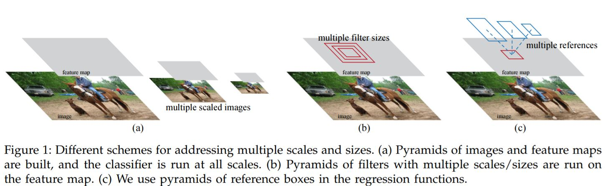
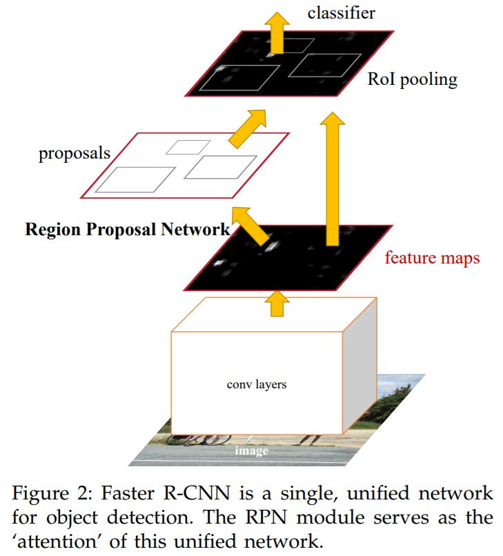 - While training we alternate between the region proposal task and object detection task while keeping the proposals fixed.
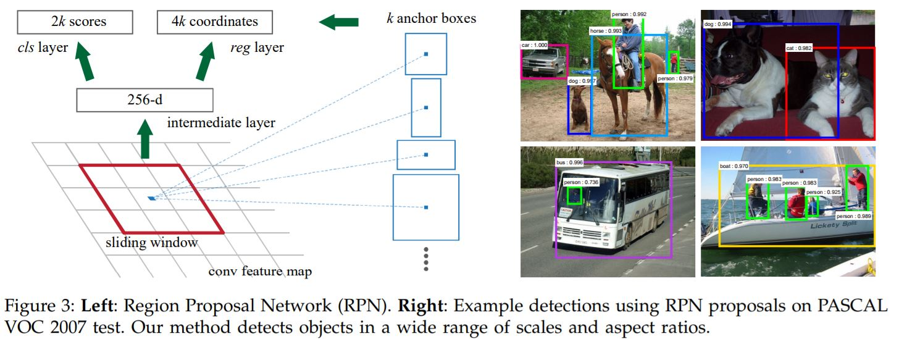
Mask R-CNN
Kaiming He, Georgia Gkioxari, Piotr Dollár, Ross Girshick : Apr 2017
Facebook AI Research
Source
Implementation
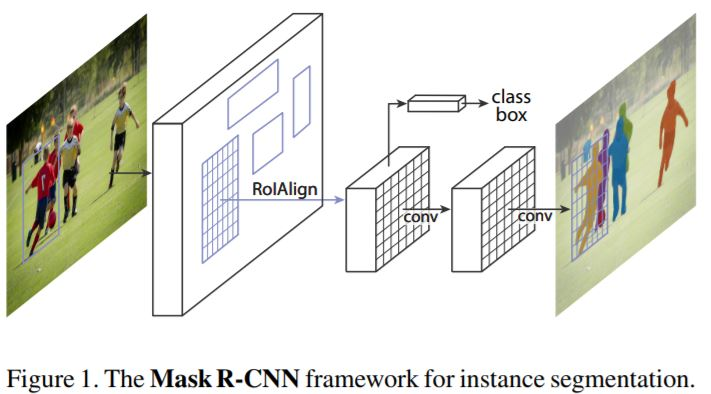
- Extends Faster R-CNN by adding another branch that predicts the object mask along with the bounding boxes.
- Faster R-CNN does not provide pixel-to-pixel alignment between network inputs and outputs.
- To fix this a layer RoIAlign is proposed which replaces RoIPool layer used previously.
- The first stage is identical to Faster R-CNN.
- In the second stage, along with predicting the class and the box offset, Mask R-CNN also outputs a binary mask for each RoI.
- Multi-task loss is used : $L = L_{cls} + L_{bbox} + L_{mask}$.
- Masks are generated for every class without competition among classes. This decouples mask and class prediction.
- Different architectures are used as convolutional backbone, ResNet and ResNeXt
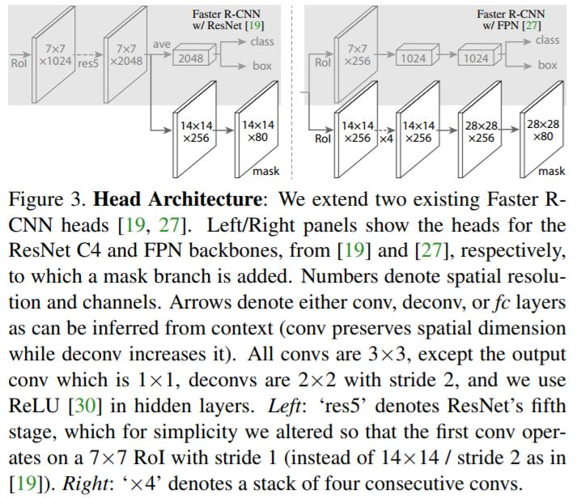
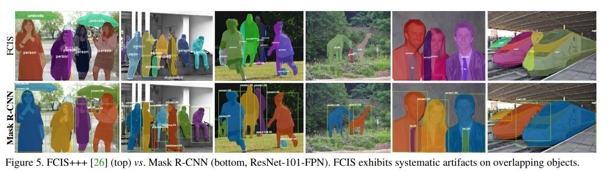
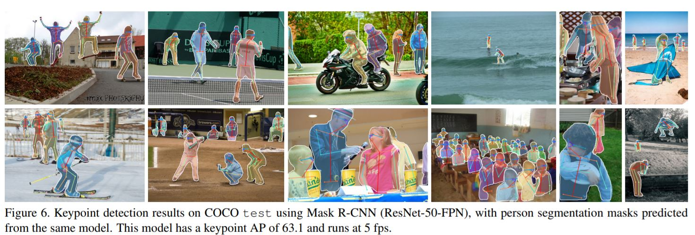
A Review of Deep Learning Techniques Applied to Semantic Segmentation
Alberto Garcia-Garcia, Sergio Orts-Escolano, Sergiu Oprea, Victor Villena-Martinez, Jose Garcia-Rodriguez : Apr 2017 Source
- Semantic Segmentation, Deep Learning, Scene Labeling, Object Segmentation
- This paper provides a review on deep learning methods for semantic segmentation applied to various application areas. This also describes the terminology used as well as some background concepts, then some existing models are reviewed(2017). At last a set of promising future works are discussed.
- These techniques are not very mature as of yet, mainly because of a lack of unifying picture. 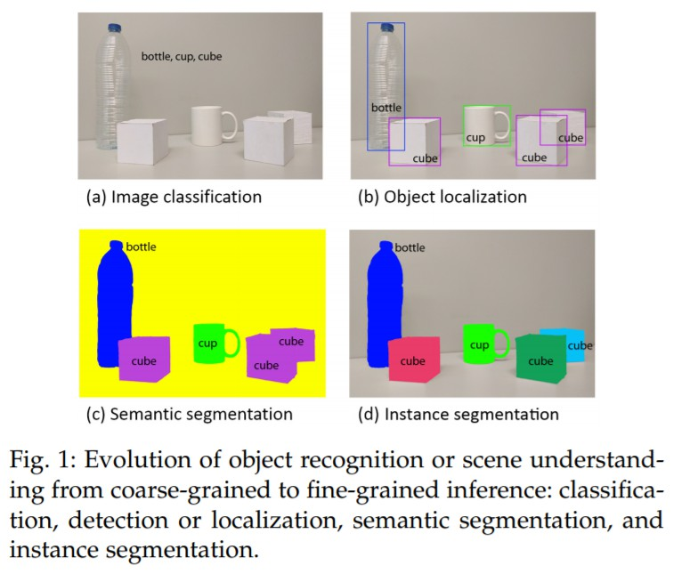
- CNN Architectures : AlexNet, VGG, GoogleNet, ResNet, etc..
- 2D and 3D Datasets : PascalVOC, [Microsoft COCO](6. http://mscoco.org/), and more,…
- Decoder Variants, Integrating Context Knowledge
- Instance Segmentation
- RGB-D Data and 3D Data
- Video Sequences
DeepLab : Semantic Image Segmentation with Deep Convolution Nets, Atrous Convolution, and Fully Connected CRFs
Liang-Chieh Chen, George Papandreou, Iasonas Kokkinos, Kevin Murphy, Alan L. Yuille : May 2017
Source
- Semantic Segmentation, Atrous Convolution, Conditional Random Fields
- Introduces upsampled filters(Altrous Convolution) as a tool in dense prediction tasks. Allows us to control the resolution at which feature responses are computed and also allows us to effectively enlarge the field of view of filters to incorporate larger context without increasing the number of parameters or the amount of computation.
- ???? // Read this again..
U-Net: Convolution Networks for Biomedical Image Segmentation
Olaf Ronneberger, Philipp Fischer, Thomas Brox : May 2015 Source
- Focuses on end-to-end training for segmentation tasks, relying heavily on data augmentation.
Fully Convolutional Networks for Semantic Segmentation
Jonathan Long, Evan Shelhamer, Trevor Darrell : Mar 2015
Source
- One of the first works to use Fully Connected layers to create pixel heatmap as output.
- Introducing Upsampling or Convolution Transpose.
From Image-level to Pixel-level Labeling with Convolutional Networks
Pedro O. Pinheiro, Ronan Collobert : Apr 2015
Source
- Weakly supervised segmentation.
- Put more weights to pixels with known class labels.
- Uses part of model trained on ImageNet and trains for segmentation on PascalVOC.